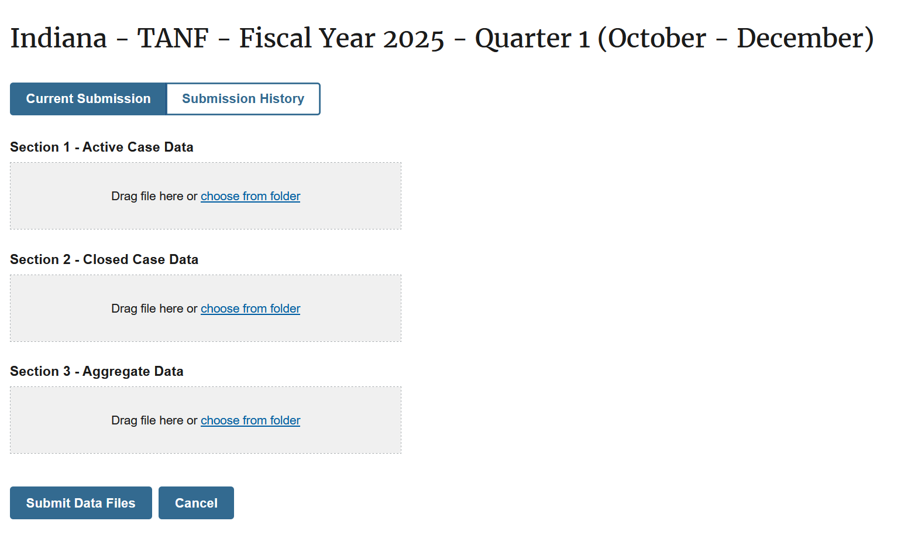
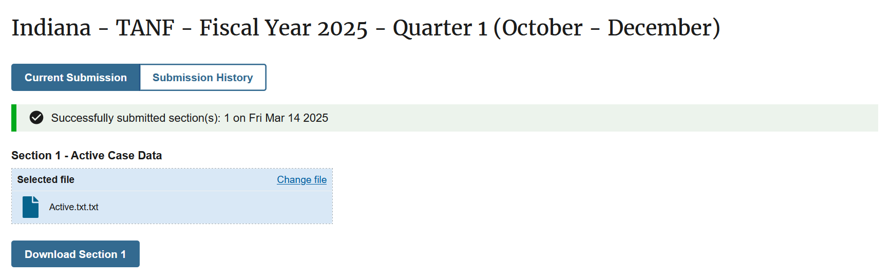

Submitting Data to TDP
Once your request for access is approved by an OFA admin, your account will have access to the ‘Data Files’ page where you’ll be able to submit your quarterly transmission files.
{kind=link}
How to submit data
-
Choose which reporting period you’ll be submitting for
On the Data Files page you’ll be able to fill out the search fields for ‘Fiscal Year’ and ‘Quarter’ to identify which data you’ll be uploading. After searching for the appropriate reporting period, a new area of the page will appear below the search button.
-
Upload your files
You can either drag each file into their appropriate sections (Active, Closed, Aggregate, and Stratum) or click ‘Choose from folder’ on a section to browse your computer for the file.
Note: Section 4 is only required for grantees who have elected to submit a stratified sample of families served in their jurisdiction rather than data for all families.
-
Submit your files
After uploading the files you want to submit, click the ‘Submit Data Files’ button. You should see a confirmation that your sections were submitted!
Upon successful submission of your data files you will also receive an email confirmation from no-reply@tanfdata.acf.hhs.gov (example below).

In the future, TDP will provide more immediate reports about your transmitted data. For now, please expect to receive the transmission reports you’re used to receiving via email within 48 hours of data submission. Note that Tribal TANF grantees do not receive transmission reports by email.
{kind=link}
{kind=link}
{kind=link}
How to retrieve your submitted data
To access a file you’ve uploaded to TDP, you can click the ‘Download Section <#>’ button below any submitted file. For now, this will provide you with the most recent version of that file (if you’ve submitted more than one). Note: TDP will auto-rename files to specify the fiscal period and section (e.g. 2021.Q1.Active Case Data), so depending on your original file-naming conventions, the files you download may have a different name.
{kind=link}
Future versions of TDP will include a ‘Submission History’ page where you’ll be able to access all of your past submitted files directly. Until then, if you need to access an older version of the file for the specified fiscal period, please reach out to directly to tanfdata@acf.hhs.gov.
How to resubmit your data
If you need to replace or revise any file submitted to TDP, you can do so either by dragging a new file into the section(s) you’d like to resubmit or by clicking ‘Change File’. Once the new file(s) are selected, make sure to click the ‘Submit Data Files’ button again to save your changes.
{kind=link}